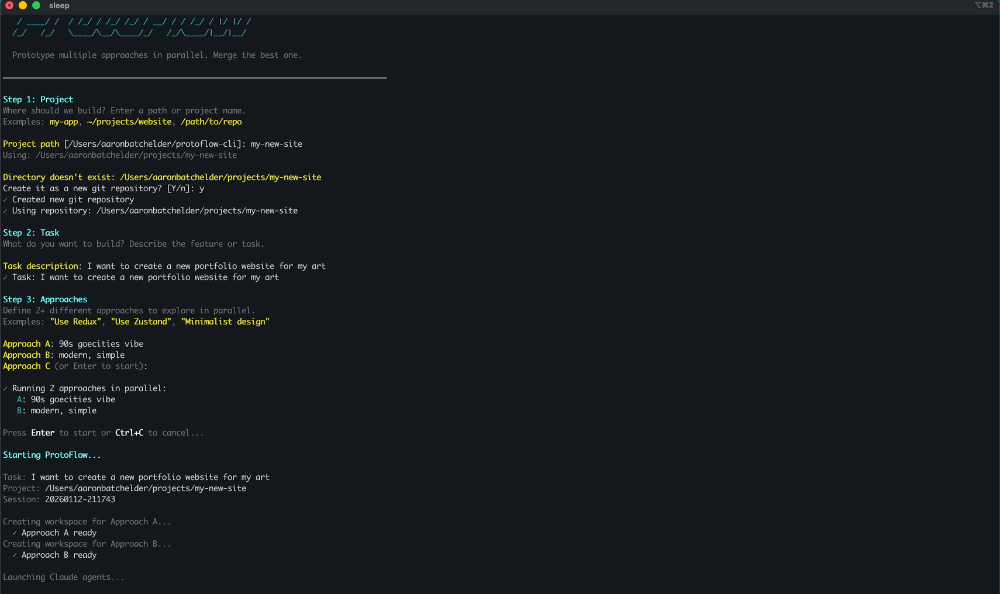

Stop debating. Start building. Spawn AI agents with different constraints and compare real working code.
curl -fsSL https://raw.githubusercontent.com/aaronbatchelder/protoflow/main/install.sh | bash

Describe what you want to build in plain language
Specify 2-4 different strategies or technologies to try
Each approach runs in its own terminal with isolated git branches
Compare working prototypes, merge your favorite
cd ~/your-project
protoflowInteractive prompts will guide you through task and approach setup.
protoflow "Add user authentication" \
--repo ~/projects/myapp \
--approach "Use Passport.js with sessions" \
--approach "Use JWT tokens"Compare UX patterns side-by-side
protoflow "Build user onboarding flow" \
--approach "Multi-step wizard with progress bar" \
--approach "Single-page form with sections" \
--approach "Conversational chat-style onboarding"Test information hierarchy options
protoflow "Create analytics dashboard" \
--approach "Card-based grid layout" \
--approach "Data-dense table view" \
--approach "Interactive charts focus"Validate mobile-first designs
protoflow "Implement main navigation" \
--approach "Bottom tab bar (mobile-first)" \
--approach "Hamburger menu with slide-out" \
--approach "Persistent sidebar"npm install -g @anthropic-ai/claude-code